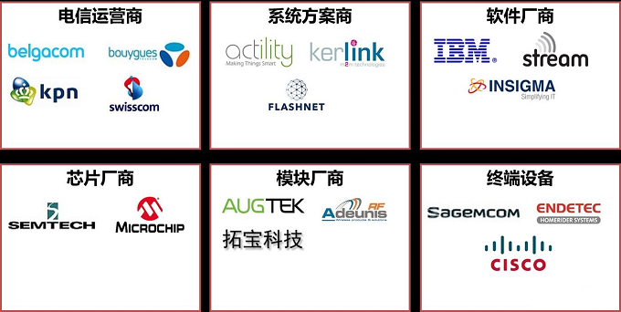

LoRa是由SemTech研发的低功耗联网技术，物联网智库近期进行持续研究，此前连续推送5篇LoRa技术、产业、应用等相关文章。在通讯技术商业化过程中，产业联盟是一股强大的推动力量，LoRa也不例外。
LoRa联盟是一个开放的、非盈利性组织，它是由业内领先厂商发起，其目的在于将低功耗广域网络（LPWAN）推向全球，以实现物联网、M2M、智慧城市的应用，联盟成员将通力合作将LoRa协议成功推向全球标准。那么，这一联盟的成员有哪些？在产业生态系统处于神秘位置呢？今天物联网智库将带大家一起揭开LoRa联盟的神秘面纱。LoRa联盟成立之初就注重生态系统建设，与产业链各环节企业共同合理推动这一技术的商用。目前，联盟成员包括跨国电信运营商、设备制造商、系统集成商、传感器厂商、芯片厂商和创新创业企业等，这些成员跨欧洲、北美、亚洲、非洲等地域。LoRa联盟成员分为创始成员、贡献成员和应用成员三类。物联网智库编辑从产业链的角度对LoRa联盟成员进行分类如下：

要实现基于LoRa技术搭建广域网，与现有电信运营商合作是一条捷径，借用电信运营商已有的基站、无线电频谱等资源，能够快速、低成本实现LoRaWan的广域覆盖和商用。多家跨国电信运营商加盟LoRa联盟，包括但不限于：
KPN：荷兰皇家KPN电信集团，是荷兰第一家电信公司，在荷兰、德国、比利时等国拥有移动网络，被评为全球最值得投资的十大电信运营商之一。
Bouygues为法国布依格电信公司，目前已成为法国三大移动网络运营商之一，近期，该公司宣布将于6月份推出使用LoRa技术的商用网络。
Swisscom为瑞士电信，是瑞士大型电信运营公司。
Belgacom为比利时最大的电信运营商。
在物联网系统方案领域，有多年物联网系统方案提供经验的厂商也加盟LoRa联盟，典型的厂商包括：
Actility是M2M领域大规模基础设施行业的领导者，基于LoRa技术开发的 ThingPark®为新一代标准化M2M通讯平台。 ThingPark®可提供对源于 Actility及其合作伙伴的增值应用的访问。
KERLINK是德国一家M2M解决方案提供商，不仅提供LoRa基站、网关等设备，更在电力、交通等领域有多年解决方案经验。
在软件领域，IBM作为LoRa联盟的核心创始成员，在LoRa技术上已投入多年，为LoRa商用化提供强大基础研究、软件、云计算、大数据的支撑；另外，如Stream、Insigma等软件类企业也在细分领域以软件能力加速LoRa商用化。
芯片厂商主要包括：
Semtech即升特公司，作为LoRa技术的推出者，升特是高质量模拟和混合信号半导体产品的领先供应商，为客户提供在电源管理、保护、高级通信、人机界面、测试和检测以及无线和传感产品方面的专有解决方案和技术，其芯片在通信、计算机和计算机界面、自动检测设备、工业和其它商业应用中得到广泛采用。
Microchip，即美国微芯科技公司，是全球领先的单片机和模拟半导体供应商，为消费类产品提供低风险的产品开发、更低的系统总成本和更快的产品上市时间。
已有多家模组厂商推出LoRa模块，其中包括数家中国厂商:
Augtek即南京八月智能科技公司，是一家运营商级物联网通信设备供应商，推出基站和LoRa通信模块。八月科技的方案开始用于船联网中，能够实现船船通信、船岸通信、岸基通信、船舶无线传感网以及航道无线传感网等船联网核心网络功能。
ADEUNIS是法国一家无线射频模组厂商，为SigFox、LoRa等低功耗、长距离网络技术提供低成本的模组。
拓宝科技位于武汉，已推出M2M通信模块、基站和传输平台，并应用于无线抄表、深林防火、井盖监控等领域。
终端厂商除了通讯设备厂商思科外，也包括多家应用终端厂商：
HOMERIDER位于法国，是全球最大无线计量表具供应商，水表、电表、燃气表是其主要产品。
Sagemcom是法国领先的宽带和移动终端供应商，包括适用于M2M的网关产品，已在供水、供电、供气等领域广泛应用。